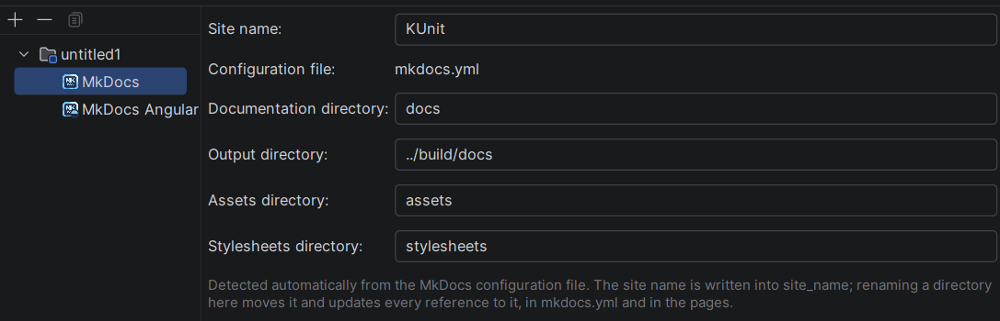
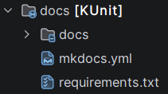

MKDocs Facet
The plugin turns every MkDocs site in your project into a module the IDE knows about. This is the foundation everything else builds on: optional MkDocs extensions are added on top of a module, the same way a framework is added to a Java module.
How a module is detected
A directory is an MkDocs module when it directly contains one of the MkDocs configuration files:
mkdocs.ymlmkdocs.yaml
The directory above the configuration file is the module — not the configuration file itself, and not the
docs_dir inside it.
Detection runs automatically:
- once when the project is opened, and
- again after every change to the file system that could affect it (creating, deleting, renaming or moving a configuration file or a directory).
There is nothing to enable and nothing to import.
Creating a site
A new site is created from the IDE: New → MkDocs Site, either from the context menu of a directory in the project view or from File → New.
The wizard has five steps. Only the first two ask for something the site cannot do without; every field of
the remaining steps is optional, and a field left empty produces no key in mkdocs.yml at all.
Step 1 — the layout
| Field | Meaning |
|---|---|
| Name | the directory the site is created in, below the location |
| Location | the directory that name is created in |
| Documentation directory | holds the *.md files, default docs |
| Assets directory | holds asset files, created inside the documentation directory, default assets |
| Stylesheets directory | holds *.css files, created inside the documentation directory, default stylesheets |
| Output directory | where mkdocs build writes the rendered site, written to site_dir |
This step decides only where files end up. The name asked for here is the logical name of the site and the
directory it lives in: entering Handbook with the location ~/projects creates the site in
~/projects/Handbook. It is not written to mkdocs.yml — what the site calls itself is asked for in the
next step, which starts out prefilled with this name. Whatever of the path does not exist yet is created
along with the site, however many levels that takes.
The output directory follows the resulting site root. Which build system surrounds the site decides where its generated output belongs:
| Surrounding module | Suggested output directory |
|---|---|
Maven (pom.xml) |
target/docs |
Gradle (build.gradle, build.gradle.kts, …) |
build/docs |
Plain IntelliJ IDEA module (.idea, *.iml) |
out/docs |
| No build system at all | site, the MkDocs default |
The search starts at the innermost existing directory of the path and walks upwards, so it works while the site directory itself does not exist yet. Editing the field stops it from following the path.
The step reports what it finds at that location:
| Situation | Reaction |
|---|---|
| The directory does not exist | nothing — it is created |
| The directory exists and is empty | nothing |
| The directory exists and holds other content | a warning; the site is created alongside it |
The directory holds mkdocs.yml / mkdocs.yaml |
an error; creation is refused |
The last case is refused because MkDocs loads exactly one configuration file per site — a second one next to it would be ignored and would confuse the module detection.
Next stays greyed out as long as the step cannot produce a site: no name, an unusable location, an empty
or path-carrying directory name, or a directory that already holds a configuration file. The output directory
may carry several levels, but it has to stay below the site root — an absolute path or one climbing out with
.. is refused.
Step 2 — the site
| Field | Written to | Required |
|---|---|---|
| Site name | site_name |
yes |
| Author | site_author |
no |
| Description | site_description |
no |
| Site address | site_url |
no |
The site name starts out as the name from the first step and stops following it as soon as you type
something of your own. The author is prefilled from the user name the Git repository records. The site
address, if given, has to be an absolute http or https address — MkDocs turns it into canonical links and
into the sitemap, so an address that is none would break both.
Step 3 — the repository
| Field | Written to |
|---|---|
| Repository name | repo_name |
| Repository address | repo_url |
Together these two produce the link to the sources that MkDocs themes show on every page. Both start out
filled with what the Git repository the site is created in says: an SSH address such as
git@github.com:acme/machine.git is rewritten to https://github.com/acme/machine, credentials and the
.git suffix are dropped, and the name is taken from the last two path segments. The name follows the
address until you edit it yourself.
Pointing the site at another repository is allowed — a site may well document something else — but it is reported as a warning, for the address and for the name, so it does not happen unnoticed. The two spellings of one repository count as equal and are not reported.
Step 4 — the copyright
The notice written to copyright and shown in the footer of every page. It comes from the Copyright settings
of the IDE:
| Configured there | What the step does |
|---|---|
| Nothing | suggests © <year> <author> |
| One notice | uses it |
| Several, one marked default | uses the marked one |
| Several, none marked | offers them in a list, starting at the first |
The notice is evaluated before it is shown, so template variables such as $today.year arrive as text, and
a multi-line source header is joined into the single line copyright expects. The text stays editable in
every case — a footer line is rarely word for word the notice of a source file.
Step 5 — the features
Optional features of the site, each switched on or off on its own. Today the step offers
Angular Material: switching it on writes the theme into the new mkdocs.yml and attaches the
Angular Material facet right away, so the finished site carries
it without waiting for the next detection run. Further features appear in this step as they arrive.
Behind step 5 — the pages of the selected features
A feature switched on appends its own pages behind the feature step, and unticking it takes them out again.
Angular Material contributes four of them — appearance, features, assets and extensions — and they are the
very same pages the facet shows as tabs afterwards; see
Angular Material. What is filled in there lands in the theme block of the
configuration file the wizard writes.
The result is the smallest structure MkDocs works with:
<location>/ (created if it does not exist)
mkdocs.yml
docs/
index.md
assets/
stylesheets/
docs_dir and site_dir are written to mkdocs.yml only when they differ from the MkDocs defaults —
repeating a default in a configuration file tells the reader nothing. Values carrying YAML syntax, such as a
site name with a colon or a hash in it, are quoted. Neither the assets nor the stylesheets directory has an
MkDocs key at all; the chosen names are remembered in the MkDocs facet.
extra_css is not written. MkDocs loads a style sheet only once that key names it, and a freshly created site
has no style sheet to name yet — the directory is a place to put them, not a promise that they are used.
Detection runs immediately afterwards, so the new site is an MkDocs module as soon as the wizard closes.
Ignored directories
Build outputs and dependency caches are skipped, so a configuration file copied into build/,
site/, node_modules/, dist/, target/, out/, __pycache__/, a virtual environment or a VCS
directory never creates a module.
The MkDocs facet
A detected module is marked with the MkDocs facet. You can see it in File → Project Structure → Modules → <module> → Facets, showing:

| Field | Meaning | Editable |
|---|---|---|
| Site name | site_name from the configuration file |
yes |
| Configuration file | the detected file, relative to the site root | no |
| Documentation directory | docs_dir from the configuration file, default docs |
yes |
| Output directory | site_dir from the configuration file, default site |
yes |
| Assets directory | the name chosen when the site was created, default assets |
yes |
| Stylesheets directory | the name chosen when the site was created, default stylesheets |
yes |
The configuration file itself is read-only — it is the file the site was detected from. Everything else is
written back into mkdocs.yml, which stays the single source of truth: change site_name there and the facet
follows just as well.
Renaming the site writes site_name and therefore renames the module with it, in the project view and in the
Site Page tool window. An empty name is refused: MkDocs would render an empty header for it.
A feature of the site adds a facet of its own next to this one, with settings pages of its own — today Angular Material.
Renaming the technical directories
The four directories can be renamed here. Applying the dialog renames the directory itself and rewrites every
reference pointing into it — the entries of extra_css, the targets of nav, theme.logo, theme.favicon
and the links of the pages — because those are the same references
Ctrl+click follows. docs_dir and site_dir are written back into mkdocs.yml, and
taken out again once they carry nothing but the MkDocs default. The assets and the stylesheets directory have
no MkDocs key, so their names are stored in the facet.
The output directory is only written, never moved: it holds build output, which the next build writes anyway.
A change that cannot be carried out is reported before anything moves:
- a name carrying a path of its own (the output directory may carry one, the others may not),
- a directory that is not there,
- a name already taken by something else inside the site,
- the same name for the assets and the stylesheets directory.
For the same reason the facet cannot be assigned by hand — it is not offered in the "+" menu of the
Project Structure dialog. A facet without a configuration file behind it would carry no site information
and would be removed again by the next detection run. To turn a directory into an MkDocs module, put an
mkdocs.yml into it; the facet appears on its own.
Should a facet without a configuration file reach a module anyway — through a hand-edited or merged .iml
file — its tab reports an error instead of showing empty fields.
In the project view
The site root is marked wherever it appears in the project view:

- the site name is shown bold in brackets behind the directory name — exactly the way a Maven project directory is rendered, so a site is recognisable without opening anything, and
- the folder icon carries a small MkDocs badge in its lower right corner.
The name in brackets is the site_name stored in the MkDocs facet, so it changes as soon as the
configuration file does. Only the site root itself gets the name, never the directories below it, and never a
directory whose module has not been detected yet.
Three directories inside a site are badged as well, each with a marker of its own:
| Directory | Marker | Recognised by |
|---|---|---|
| Site root | circle | it directly contains the configuration file |
| Documentation directory | sheet of paper | docs_dir of the site directly above it, default docs |
| Assets directory | picture frame | the name in the facet, directly inside the documentation directory |
| Stylesheets directory | brush | the name in the facet, directly inside the documentation directory |
The four markers differ in shape, not only in colour, so they stay apart at overlay size. A directory named
assets or stylesheets somewhere deeper in the documentation tree is neither of them and stays unmarked.
The colour of the name comes from the colour scheme entry MKDOCS_SITE_NAME, which ships with a value for
light themes and one for dark themes, so the marking stays readable in either.
Three kinds of file get an icon of their own — in the project view, in editor tabs and in navigation popups alike:
| File | Icon | Recognised by |
|---|---|---|
mkdocs.yml / mkdocs.yaml |
MkDocs configuration | the file name |
*.md below docs_dir |
MkDocs page | it lives inside the documentation directory of a site |
requirements.txt |
MkDocs requirements | it sits directly next to the configuration file |
The page icon applies recursively, so a file in docs/guide/advanced/ is marked just like one directly in
docs/. Markdown outside the documentation directory — a README in the site root, say — is not published by
MkDocs and keeps the icon the IDE gives it. The file types stay YAML and Markdown, so all existing support
keeps working; only the icons change.
The requirements icon is deliberately narrow: only the requirements.txt in the site root — the one listing
the MkDocs packages the site is built with — is marked. A requirements.txt of a Python project elsewhere in
the repository, or one buried inside the documentation directory, has nothing to do with MkDocs and keeps the
icon the IDE gives it.
Suggested directories
A site that is missing one of its directories offers it in the platform's New Directory dialog:
| Invoked on | Suggestion |
|---|---|
| the site root | the documentation directory named by docs_dir |
| the documentation directory | the assets and stylesheets directories named in the facet |
Each suggestion carries the same badge the project view puts on the finished directory. A directory that already exists is not offered — there would be nothing to create.
Module name
The module name is taken from site_name. If the key is missing or empty, the name of the directory
containing the configuration file is used instead. Should two sites end up with the same name, the second one
gets a ~2 suffix.
Which module the facet lands on
| Situation | Result |
|---|---|
| The site directory belongs to an existing module | that module receives the MkDocs facet |
| The site directory belongs to no module at all | a new module is created for the site directory |
| The existing module already represents another site | a new module is created for the site directory |
Reusing the surrounding module is deliberate: it keeps the module layout that Gradle, Maven or the .NET solution import produced intact. A module created by the plugin is removed again as soon as its configuration file disappears.
Several sites in one module
A module carries at most one MkDocs facet and therefore represents exactly one site. If a module contains
more than one site — say app/docs-a/mkdocs.yml and app/docs-b/mkdocs.yml — the first one by path stays
on the existing module and every further one gets a module of its own, just like a site belonging to no
module.
Because a directory can belong to a single module only, the site directory has to leave its previous module first: it is excluded there and becomes the content root of the new module. Deleting the configuration file reverses both steps — the module is disposed and the directory is handed back, so it is neither excluded nor orphaned.
Note
In a module imported by Gradle, Maven or the .NET solution import, that exclusion lives in the IDE's module model only. A reimport rebuilds the model from the build script and can therefore drop it; the next detection run applies it again.